1两套 App 现状对照（只读摸查结论）
| 维度 | 老板端 apps/boss-app | 工作端 apps/worker-app |
|---|---|---|
| App 名称 / 包名 | 祁连山电竞（boss_app） | 祁连山电竞内部（worker_app） |
| lib/pages 页面数 | 30 个页面文件 | 18 个页面文件 |
| 底部导航 | 5 位：服务 · 订单 · 凸起＋（AI 祁小山分支） · 消息 · 我的HomeShell.pageAi=4，导航位 2；底栏常驻、凸起有选中态 | 5 位：首页 · 订单 · 排行榜 · 消息 · 我的AppPlainBottomNav，badgeIndex=3 |
| 顶部导航 | 排行榜 · 公告 + 搜索（玩家圈已下线） | 无顶部导航 |
| 登录方式 | POST /auth/login role=user；可自助注册（可选邮箱验证码） | POST /auth/login role=worker；不可注册，账号由管理员创建 |
| 独有能力 | 下单 / 商品 / 找陪玩 / 排行榜 / AI 祁小山 / 积分 / 会员成长 / 好友 / 客服 / 主题 | 接单大厅（抢单）/ 我的订单（派单确认、开始服务、提交完成）/ 排行榜 / 收益 my-wallet / 客服会话 / 老板直聊 / 好友 |
| pubspec 差异 | name: boss_app；多 flutter_miuix 与 MiSans 字体资源 | name: worker_app；无 MiSans（走系统字体）；其余依赖与 core 完全一致 |
| 共享代码 | apps/packages/core（fish_core）：AppColors/AppTheme 设计 token、ApiClient、AuthStore、OrderBrief、AppBottomNav/AppPlainBottomNav、UpdateCenter | 同一份 core，零分叉 |
| 云端更新通道 | UpdateCenter.configure('boss') | UpdateCenter.configure('worker')（两端通道相互独立） |
| 当前线上版本 | v1.11.18（码 75，日志记录最新） | v1.7.4（码 51，日志记录最新；负责人所述 v1.7.8 略高，以线上通道为准） |
结论：两端页面逻辑高度同构（共享 fish_core：设计 token、ApiClient、AuthStore、OrderBrief、底部导航组件、UpdateCenter），
差异集中在导航骨架、登录 role、独有业务页三处。这意味着"合并"在客户端不是重写，而是把工作端的 3 个核心页面下沉到 core，再按身份挂载。
2关键冲突点清单（本方案的核心风险）
| 冲突 | 代码/数据现状（可验证） | 对本方案的影响 |
|---|---|---|
| ① 单设备登录会互相顶号（最高风险） | POST /auth/login 成功后 issueTokens(replaceOthers=true) 会把该账号所有 revoked=0 的会话置为 revoked=2；JwtAuthGuard、refresh、WS 握手/心跳都会因此返回「账号已在其他设备登录」，客户端 AuthStore.onSessionKicked 全局踢出。 | 结论：如果在老板端 App 里用打手账密登录，真正的**工作端 App 会被立刻顶下线**。这不是 bug，是既有安全设计。合并方案必须先决定"工作端 App 是否还保留"以及"是否给合并端一条不相斥的会话"。 |
| ② 老板账号 ↔ 打手账号没有任何关联模型 | user 表单表三端（role ∈ user/worker/admin），worker.user_id 是 UNIQUE（一个账号至多一条打手档案）；全库不存在任何"老板↔打手"绑定表或字段。 | 结论：绑定关系必须新建（表 + 接口 + 解绑 + 审计）。同时要拍板：一人能绑几个打手账号、能否解绑、解绑后是否撤销会话。 |
| ③ 切换后的权限：按分部，已经实现但客户端要照着渲染 | 权威表 worker_division_permission(worker_id, division_id, can_take_order)；worker.can_take_order 只是"是否有任一授权"的派生汇总。抢单/派单/指定护航/找陪玩/AI 候选人全部按分部实时查库。 | 结论：打手态的分部胶囊、订单可见范围、"无权限"提示全部由 /auth/me 的 divisionPermissions + /worker/division-permissions 驱动，客户端不得缓存判定，也不得自绘未授权分部。 |
| ④ 切换后的数据边界：只显示三处，且不能有老板端残留 | 打手态 = 接单大厅 + 消息（老板/客服）+ 我的。老板端元素包括：凸起＋（AI 祁小山）、下单浮标、服务页、找陪玩、排行榜、玩家圈（已下线）、积分卡/会员成长、订单页与三状态计数。 | 结论：不只是"隐藏 UI"——老板态那些页面如果在 IndexedStack 里继续挂着，未读轮询、WS 订阅、缓存刷新都还在跑，红点会串到打手态。必须**按身份真正不挂载**，见改动清单 C4/R3。 |
| ⑤ 打手账号是"内部账号"，把它引进 C 端 App 是安全边界的移动 | 工作端是内部 App（账号由管理员创建、可停用）。打手账号能看到客户下单信息、能接单、能提现。单设备登录正是为了限制内部账号被共享。 | 结论：不建议简单"豁免单设备"。推荐给合并端签发受限的 companion（伴随）会话：不参与 primary 互斥、TTL 更短、每次请求校验绑定、可在打手侧一键撤销。见方案甲-2。 |
| ⑥ 额外发现：大厅"无任何分部权限"是报错页而不是空态 | order.service.workerHall：worker.canTakeOrder !== 1 时直接 ForbiddenException('无接单权限')（403）。只有"有权限但传了无权限分部"才返回空列表 + divisionDenied + 中文提示。而 CLAUDE.md 的约定是"大厅无权限返回空列表 + 中文提示（不是报错页）"。 | 结论：新绑定的打手很可能一个分部权限都没有——这是高频路径，却会撞上 403 → 客户端 orders_page 落到红字 + 重试按钮的错误分支。建议一并修（改动清单 D4）。 |
| ⑦ 额外发现：商品 price 与名称里的数字不一致 | 线上 product.price 是 DECIMAL(10,2) 真实字段，如「9.9新人体验单保200w不卡保底」存 99、「人机爆红单15.88」存 158.8；App 直接 fmtPoints(price) 展示，于是出现"名字 9.9 / 价格 99"。 | 结论：本次设计稿按线上真实字段值展示（不美化）。是否按 ×10 口径重录数据请负责人拍板（待拍板第 7 条）。 |
3架构方案（3 个可选 + 推荐与代价）
同一个 App 内两种身份状态：老板态不变；绑定打手账号后切到打手态（3 项导航）。服务端加一张绑定表 + 一条"伴随会话"（companion），既不动单设备规则，也不顶掉工作端。
把打手能力并进 user 账号：登录一次即两身份，切换只切界面。要从根上改 role 单值模型与所有 @Roles('worker') 守卫。
两个 App 不改，只在老板端加"打开工作端"入口（深链 / 应用商店）。
3.1 七维度对比
| 维度 | 方案甲 一 App 双态（推荐） | 方案乙 一账号双角色 | 方案丙 两 App + 统一入口 |
|---|---|---|---|
| 数据模型改动 | 中：新增 1 张绑定表 worker_identity_binding；auth_token 加 kind/device_id 两列（存量行默认 primary，行为不变）。worker 与 worker_division_permission 零改动 | 极大：user 要承载"一个账号两种身份"——要么把 worker 并入 user，要么把 role 单值列改成多角色/角色集合；auth_token.role、订单归属、聊天 actor、排行榜、管理端筛选全部跟着改 | 零：不改表；只加一个跳转入口与（可选）深链 |
| 认证改动 | 中：新增 POST /auth/identity/bind 与 /auth/identity/switch-worker；issueTokens 增加 kind 参数（companion 不顶 primary）；guard 对 companion 校验绑定有效性 + 更短 TTL；/auth/me 附绑定信息。阶段 1 可零改动（直接复用 /auth/login） | 极大：登录一次要同时产出两种身份上下文；@Roles('worker') 守卫的语义要重写（是"角色"还是"当前激活身份"）；JWT role 单值要改成激活身份；单设备登录的粒度要重新定义（按账号还是按身份） | 零：完全不动认证 |
| 客户端改动量 | 中：core 的 AuthStore 从单 token 槽改成双槽（activeIdentity）+ ApiCache 会话隔离按身份 + RealtimeClient 按身份建 socket + boss-app 新增打手态 3 页（建议把 worker-app 的页面逻辑下沉到 core 共用）+ HomeShell 身份分支 + 「我的」页身份分组 | 极大：两端所有依赖 AuthMe.role 的页面都要改成"看 activeIdentity"；工作端 App 的整套登录/守卫语义要重写；两端 UI 都要新增身份切换器 | 极小：加一个入口按钮 + 应用商店/深链跳转（1 小时内可完成） |
| 回归风险 | 中：最大风险点是 core AuthStore（两端所有页面都依赖它，改坏=两端都登不上）+ 单设备语义变化 + 红点/WS 串味。可控：阶段 1 把双槽做成"单身份路径逐字节不变"，并追加双身份切换专项测试 | 极高：动的是账号体系地基（登录、守卫、订单归属、聊天 actor、管理端筛选）。全量回归 14 套件 + 三端都要重测，且线上老板端 v1.11.18 / 工作端 v1.7.x 的真实用户全部受影响 | 极低：不碰任何既有链路 |
| 对已上线功能的影响 | 老板端既有功能不受影响（老板态零改动）；工作端 App 在阶段 1 会被"顶号"（需提前告知打手），阶段 2 用 companion 会话后不再互相影响 | 影响全部：已上线的两端都要发新版；工作端 v1.7.x 那批真实打手必须迁移；revoked=2 单设备语义变化会影响正在用多设备的所有人 | 无影响：两个 App 都不改代码（除老板端加一个入口） |
| 开发量估算 | 阶段 1 1-2 天（可先内部试用）；阶段 2 4-6 天（正式版）；阶段 3 2-3 天（可选增强）。合计 7-11 天 | 3-4 周起，且必须冻结其他需求；一次做错会同时影响三端 | 0.5 天 |
| 长期维护成本 | 低：两套骨架共用一个 App，页面逻辑下沉 core 后两端可共用；工作端 App 若下线只需停通道 + 发通知 | 低（终局）：一个账号一套身份，长期最干净；但迁移代价今天就要付 | 高：两个 App 要各自发版、各自修 bug、各自维护更新通道；打手要装两个 App |
3.2 推荐：方案甲（分两阶段落地，正式版采用「伴随会话」）
推荐方案甲，理由四条：
① 对已上线功能影响最小：老板态一屏不动；工作端 App v1.7.x 的既有打手用户不需要迁移、不需要重新习惯（阶段 2 用 companion 会话后连登录状态都不受影响）。
② 不破坏单设备登录这条安全设计：companion 会话不参与 primary 互斥，但独立受限（绑定关系签发、TTL 12h、每次请求校验绑定有效、可撤销）。打手账号在"多台工作端 App 上同时登录"依然被禁止。
③ 复用度最高、开发量最低：两端共用 fish_core，把工作端 3 页下沉 core 后 boss-app 直接引用；服务端只新增 1 张表、1 个枚举列、2 个接口。
④ 可回退：阶段 1 是纯客户端改动 + 1 处服务端缺陷修复，任何问题都能只发一版老板端回滚；不需要冻结其他需求。
方案甲的代价（必须知道）：
① AuthStore 双 token 槽是两端共用代码的改造，回归面覆盖两端所有页面（R1）。
② 引入 companion 会话后，"单设备登录"从"一句话规则"变成"两类会话 + 一张绑定表"，规则复杂度上升，必须在文档与测试里写死（R2）。
③ 阶段 1（复用 /auth/login）会顶掉工作端登录 → 只适合内部试用，不建议直接给全部打手。
④ 不做方案乙的原因：乙要重写账号体系地基（role 单值、守卫语义、订单归属、聊天 actor、管理端筛选），三端同时受影响、3-4 周起，而收益只是"少一张绑定表"。不做方案丙的原因：不是负责人要的"合并成一个"，且要求打手装两个 App、深链在国产 ROM 上不可靠；但丙可以作为今天的临时兜底（0.5 天）。
4三套设计（各 6 屏 · 390×844）
六屏固定覆盖：① 老板态「我的」（含切换入口）② 切换身份弹层（含全部错误态）③ 打手态·接单大厅 ④ 打手态·消息 ⑤ 打手态·我的 ⑥ 切回老板态「我的」（已绑定/解绑）。
每屏 HTML 支持 ?state= 变体，本页每个变体都已出 PNG。
A · 同 App 双态
推荐落地形态老板态一屏不动；打手态是同一 App 内另一套骨架（3 项导航、无凸起）。
适合：常规形态：以接单为主、偶尔切回下单的打手。
优点
- 改动最小：老板态 0 改动（只多一个「身份」分组）
- 认知成本最低：切换后"少了两个 tab"，一眼看懂身份变了
- 打手态骨架天然干净：没有凸起位就放不进 AI 与下单
- 与线上工作端 App 的操作习惯最接近（打手无需重新学）
代价 / 风险
- 打手态与老板态两套底部导航，需要在 HomeShell 里做分支挂载（否则老板态页面/轮询仍在后台跑）
- 打手要回老板态下单，得先切身份；无法"边接单边下单"
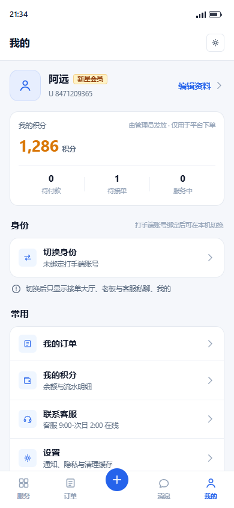
default
打开 HTML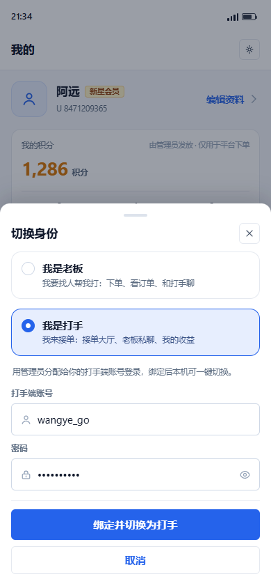
default error role banned conflict noperm bound
打开 HTML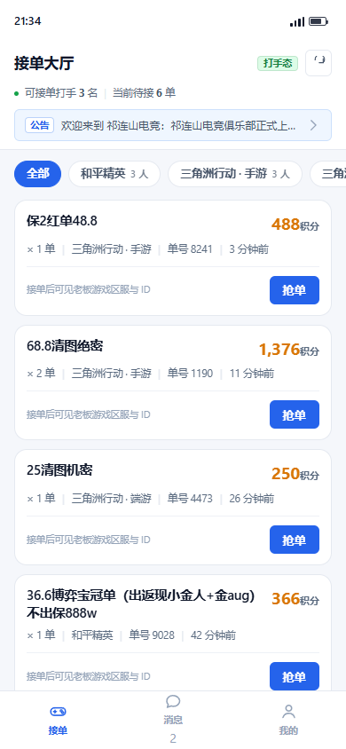
default empty noperm kicked
打开 HTML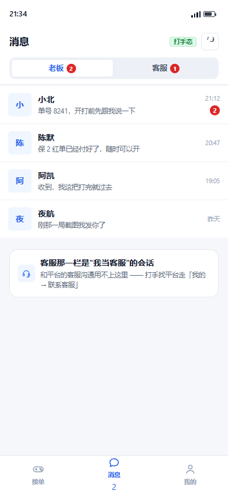
default cs
打开 HTML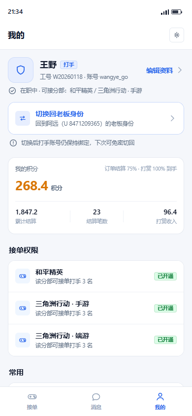
default
打开 HTML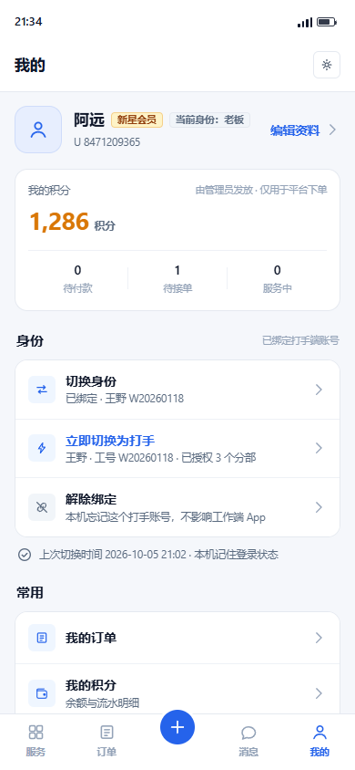
default unbind
打开 HTMLB · 态内二级（全屏工作台）
重度接单备选打手态是一整块全屏工作区：顶部工具条（返回老板端 / 打手工作台 / 工号）+ 文字 tab，没有底部导航。
适合：长时间蹲大厅、批量抢单的重度打手。
优点
- 信息密度最高：一屏约 11 条单（A 约 5-6 条）
- "工作区"心智清晰：进入即专注接单，老板端界面整体收起
- 顶部常驻返回出口，回到下单只要一次点击（不用先切身份）
代价 / 风险
- 没有底部导航＝打手必须记住顶部文字 tab 的位置，学习成本高于 A
- 返回出口只有一个（左上角），可用性风险最高（本稿用"页内再加一个大按钮"兜底）
- 老板态「我的」页多了一个常驻入口条，对纯老板用户是噪音
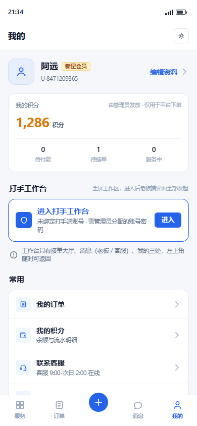
default
打开 HTML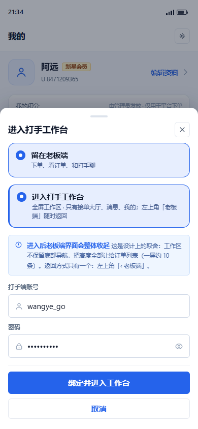
default error conflict bound
打开 HTML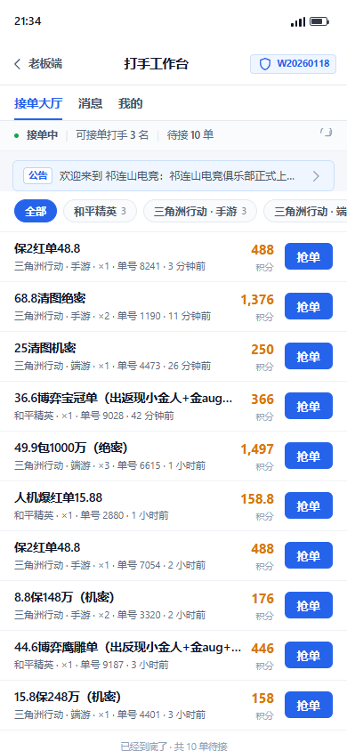
default empty noperm
打开 HTMLdefault cs
打开 HTML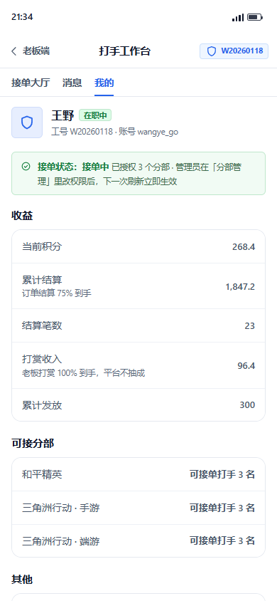
default
打开 HTML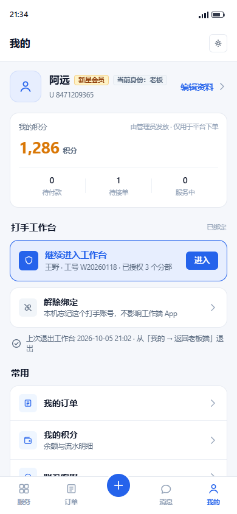
default unbind
打开 HTMLC · 双身份并列
语义最清楚，老板态有代价身份是并列的两个：老板态「我的」页顶部常驻两格切换器，两态共用同一套底部导航组件，项按身份渲染。
适合：双身份都很常用（既接单又下单）的老用户。
优点
- 任何时刻都能看见"我现在是谁"（两态顶部都有身份标识）
- 切回老板最快：顶部一键，不用找页面内按钮
- 两态骨架一致，切换时视觉不跳
代价 / 风险
- 老板态「我的」页多一个常驻板块（约 92px），纯老板用户会觉得是无效信息
- "共用骨架"与"打手态不得有任何老板端元素"存在张力：必须严格用状态位改写导航项，稍有不慎就会残留
- 底部导航同位置换项，用户可能误以为"订单 tab 不见了"而不是"我换身份了"
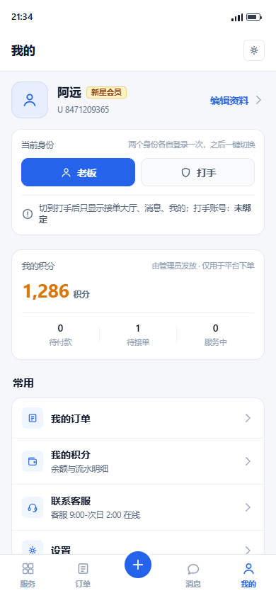
default
打开 HTML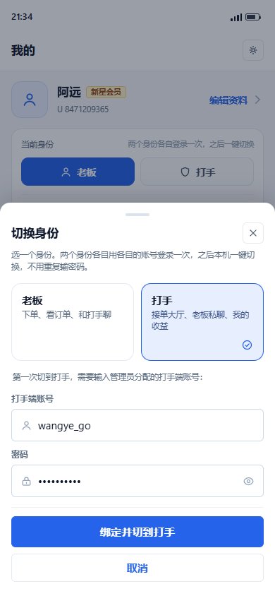
default error noperm bound
打开 HTML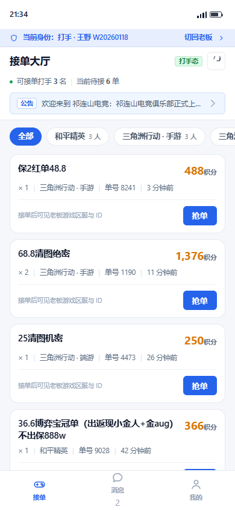
default empty
打开 HTML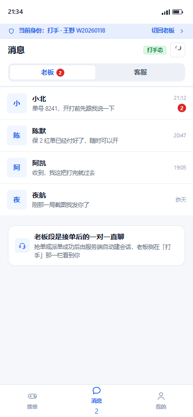
default cs withfriend
打开 HTML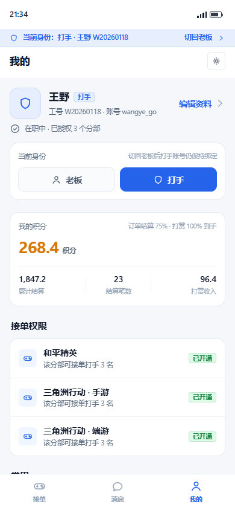
default
打开 HTML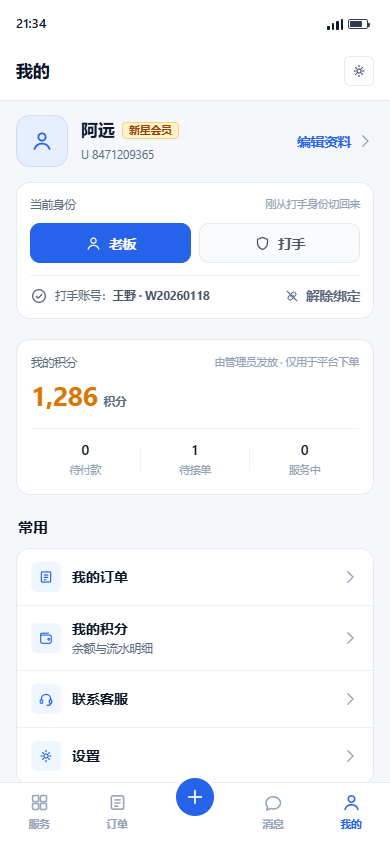
default unbind
打开 HTML4.1 打手态"干净度"在结构上怎么保证
A · 换骨架
老板态 AppBottomNav（5 位，含凸起＋）→ 打手态 AppPlainBottomNav 只传 3 项。凸起位不存在，AI 与下单浮标物理上放不进来。
B · 无导航
全屏工作区，底部导航整块不渲染；老板态页面（服务/订单/AI）不入 IndexedStack。返回出口只有顶部工具条 + 页内大按钮。
C · 同骨架改项
导航组件与几何完全相同，导航项按 actingIdentity 渲染（5 项 ↔ 3 项），凸起位在打手态整体不渲染（不留空位、不置灰）。顶部 30px 身份细带兜住"我现在是谁"。
关键实现要求（三套共用）：干净度不能只靠"隐藏 UI"。老板态的页面若仍挂在 IndexedStack 里，
未读轮询 / WS 订阅 / 缓存刷新会继续跑，红点会串到打手态。必须按身份真正不构建老板态页面，并在切身份时断旧 WS、建新 WS（改动清单 C2/C4，风险 R3）。
5接单大厅的信息架构：参考图 → 我们的取舍
| 参考图元素 | 参考图有什么 | 我们的决定 | 依据 |
|---|---|---|---|
| 顶部搜索框 | 有（搜索订单标题/商家名/订单号） | 不做 | 线上 /worker/order-hall 只有 page/pageSize/divisionId，没有 keyword 参数。按 docs/21「不存在的东西不出现」不画；要做需后端加过滤（过滤 order_no + 快照商品名），列入待拍板第 6 条 |
| 轮播 banner | 有（HOT 大图 + 分页点） | 不做 | 线上 /public/banners 当前返回空数组。真要做也该在公告位而不是大厅顶部（大厅是工作界面，不是营销位） |
| 游戏分类胶囊 + VIP 角标 | 有（全部/绿洲/三角洲/暗区/地铁/装备，5 个带 VIP） | 换成：分部筛选胶囊 | 我们真实有的是 division 表 + worker_division_permission。胶囊只出该打手已授权且在营的分部（示例：和平精英 / 三角洲行动·手游 / 三角洲行动·端游）；无畏契约两个分部建设中 → 不出现。VIP 角标无对应业务，一律不画 |
| "开通会员后才能抢单"+ 立即开通 | 有 | 不做（我们没有会员体系） | 平台没有 VIP/会员购买，接单能力 100% 由管理员按分部授予。画一条"开通会员"按钮等于承诺一个不存在的功能 |
| 微信区 / QQ区 胶囊 | 有（放在列表上方） | 不做"选大区"，改成一句事实说明 | 参考图那两个胶囊是"老板在哪个大区下单"的口径，打手大厅不按大区筛。线上 order.game_zone 真实存在（qq/wechat），但 /worker/order-hall 刻意不下发（老板游戏区服与 ID 只有抢单成功后才可见，隐私铁律）。因此大厅卡片上不放区服标签，改为一行事实：「接单后可见老板游戏区服与 ID」——把"看不到的原因"说出来，比放一个空标签好 |
| 公告行 | 有（"欢迎使用嘉楠系统…"） | 保留，接真实公告 | 线上 /public/announcements 真实数据：「欢迎来到 祁连山电竞 · 祁连山电竞俱乐部正式上线，快来体验专业陪玩服务。」（置顶优先 + 时间倒序） |
| 列表 | 有（空态"没有更多了"） | 保留，换真实字段 | 真实字段：商品名（order_price_snapshot.product_name）× 数量、金额 fmtPoints(total_amount)、分部（divisionId → /divisions 名称）、单号后 4 位、相对时间（createdAt）。不展示老板游戏 ID（服务端大厅本就不返回） |
| 底部导航 | 4 位（首页/订单/消息/我的） | 打手态 3 位（接单/消息/我的） | 参考图的"订单"是老板侧订单；打手态的「我的订单」并进「我的」页，保持"只显示三处" |
真实数据落点（全部来自本机 3100 实读，2026-10-05）：
fmtPoints(price × quantity)，如 488 / 1376 / 158.8 —— 非整数、长短不一game_zone / game_player_id 只有抢单成功后才由服务端下发（隐私铁律），卡片上改为一行事实「接单后可见老板游戏区服与 ID」➕（U+2795，例：38.8保1000w（送7级套➕强化74u/妹控/Aug强化12k四选一））。本稿为满足 docs/21「无 emoji」改用同分部的另一条真实商品（44.6博弈鹰雕单…）。建议管理端在商品名保存时过滤 emoji 字符（管理端改动，不在本次范围）6错误态矩阵（6 类，文案 + 下一步 + 对应屏）
| 场景 | 服务端真实响应 | 中文提示（设计定稿） | 下一步与布局 | 对应屏 |
|---|---|---|---|---|
| 账密错误 | 401 | 账号或密码错误，请重新输入。连续 5 次会锁定 1 分钟。 | 留在弹层，两个输入框转 .err 态，主按钮文案变「重新绑定」 | A2 error / B2 error / C2 error |
| 填了老板账号（角色不符） | 403「账号角色不符」 | 这个账号是老板账号，不是打手账号：你填的 ayuan_2026 是老板端账号。打手端账号由管理员创建分配，通常形如 wangye_go；如果你本身是打手，请向客服要自己的工号与密码。 | 橙色提示条（不是红色错误行）——这不是"你输错了"，而是"你拿错了账号"；主按钮置灰，副按钮改成「联系客服」 | A2 role |
| 账号已被禁用/封禁 | 403 errorCode=ACCOUNT_BANNED | 该打手账号已被停用：王野 · 工号 W20260118 · 停用时间 2026-10-04 18:20。停用期间无法接单，请联系管理员恢复后再绑定。 | 红色提示条 + 具体时间与工号（服务端已下发结束时间）；主按钮置灰，副按钮「联系管理员」 | A2 banned |
| 该账号已在别处登录（单设备冲突） | 登录成功但旧端收到 revoked=2 | 该账号正在另一台设备上登录：平台是单设备登录，继续绑定会让那台设备（通常是工作端 App）立刻退出登录，并提示"账号已在其他设备登录"。 | 橙色事前告知条 + 账号信息卡（账号/工号昵称/可接分部）+ 主按钮明确写成「仍然绑定，让那台设备下线」，副按钮「先不绑定」。反向情形（本机被别的设备顶掉）→ 大厅顶部红色提示 + 两个动作：「重新登录打手账号」/「切回老板身份」（A3 kicked） | A2 conflict / B2 conflict / A3 kicked |
| 无任何接单权限 | 服务端 /worker/order-hall 当前返回 403「无接单权限」 | 你暂无任何分部的接单权限：绑定成功了，但管理员还没给你开通分部。请让管理员在「分部管理 → 打手权限」里勾选至少一个分部；开通后这里会自动出现订单，不用重新绑定。 | 在进入打手态之前就拦住（弹层内提示 + 主按钮置灰 + 「留在老板态」）；若用户仍进入了打手态，大厅给同文案的空态 + 「联系客服」，不要给红字报错页 | A2 noperm / C2 noperm / A3 noperm / B3 noperm |
| 已是绑定状态 | 无需请求 | 已绑定打手端账号：王野 · 工号 W20260118 · 已授权 2 个分部（和平精英、三角洲行动 · 手游）。 | 弹层显示绑定卡 + 两个动作：「立即切换为打手」（免密）与「解除绑定」（带影响说明）；不再要求输密码 | A2 bound / B2 bound / C2 bound |
文案原则：① 不说"操作失败"这种无信息的话，说清是什么问题（谁的账号、什么时候被停用、哪台设备）；② 每条错误都给一个明确的下一步（重新输入 / 联系客服 / 联系管理员 / 仍然绑定）；③ 区分"你输错了"与"你拿错了账号"——后者用橙色告知条而不是红色错误行（role 态）。
7打手态干净度：核验器的黑名单与结构断言
文本黑名单（9 张打手态屏逐屏断言，只查可见文本）
命中任意一个 → 该屏核验 FAIL。审批说明块 .spec 位于手机壳外，不计入断言范围。
结构断言
- 打手态屏内不得存在
.tb-c（底部凸起位）与.fab（下单浮标） - 打手态底部导航文字项必须 ⊆ {接单, 消息, 我的}；B 方案必须没有
.tabbar3，改由.ws-top（工作台工具条）承担导航 - 老板态屏必须仍有 5 项（服务/订单/消息/我的）+ 凸起位，且老板态不得出现「接单」字样
- 每屏：
innerWidth=390、无横向溢出、无U+FFFD、无 emoji、document.images.length=0（无位图/插画） - 每屏：
linear-gradient面积为 0；box-shadow只允许出现在.sheet弹层内 - 关键真实数据必须出现：大厅屏含「和平精英」「三角洲行动」「欢迎来到 祁连山电竞」；消息屏含「祁连山客服」；我的屏含「工号」
8改动清单（数据 / 认证 / 客户端 / 运维）
| # | 层 | 改动 | 文件 | 影响 / 风险 | 阶段 |
|---|---|---|---|---|---|
| D1 | 数据 | 新增 worker_identity_binding(id, user_id, worker_user_id, device_id, status, bound_at, last_used_at, revoked_at)，唯一键 (user_id, worker_user_id, device_id) | server/src/modules/auth/（或 worker/）+ migration | 仅新增表，存量数据零影响 | 阶段 2 |
| D2 | 数据 | auth_token 增 kind（primary/companion，默认 primary）与 device_id（可空） | auth-token.entity.ts + migration | 存量行默认 primary → 单设备语义保持不变 | 阶段 2 |
| D3 | 数据 | 不动：worker、worker_division_permission、chat_conversation、order 全部保持原样 | — | — | — |
| D4 | 服务端 | 建议修复：workerHall 在"无任何分部权限"时由 403 改为返回空列表 + divisionDenied:true + 中文提示（与 CLAUDE.md 约定一致） | order.service.ts → workerHall() | 老客户端也兼容（同样得到空列表）；避免新绑定打手看到报错页 | 阶段 1 |
| A1 | 认证 | 新增 POST /auth/identity/bind（校验打手账密 + 建绑定）与 POST /auth/identity/switch-worker（签发 companion 会话） | auth.controller.ts / auth.service.ts / dto/auth.dto.ts | 新增接口；阶段 1 可先不实现，直接复用 /auth/login（代价是会顶掉工作端） | 阶段 1/2 |
| A2 | 认证 | issueTokens(user, replaceOthers, kind)：kind=companion 时不顶掉 primary 会话，且只顶掉"同一 device_id 的旧 companion" | auth.service.ts → issueTokens() | 单设备语义保持：primary 之间仍互斥；companion 每设备最多 1 条 | 阶段 2 |
| A3 | 认证 | JwtAuthGuard：companion 会话每次请求校验绑定仍有效（status=1），TTL 更短（建议 12h），过期后需重新切换 | common/guards/jwt-auth.guard.ts | 解绑/管理员停用后立即失效；不影响 primary 校验路径 | 阶段 2 |
| A4 | 认证 | GET /auth/me 追加绑定信息（companion: {bindingId, workerUserId, deviceId, expiresAt}）或新增 GET /auth/identity | auth.service.ts → me() | 纯新增字段，老客户端忽略即可 | 阶段 2 |
| A5 | 审计 | 绑定 / 解绑 / 切换 写 login_log 或 operation_log（谁、哪个老板账号、哪个打手账号、哪台设备） | auth.service.ts + log 模块 | 可追溯"内部打手账号在 C 端 App 的使用" | 阶段 2 |
| C1 | 客户端 | AuthStore 单 token 槽 → 双槽：auth_access_token 与 auth_access_token#worker + activeIdentity；单身份路径必须逐字节不变 | apps/packages/core/lib/src/auth/auth_store.dart | 最大风险点：两端所有页面都依赖它。必须补 core 测试 + 双身份切换专项 | 阶段 1 |
| C2 | 客户端 | ApiCache 会话隔离维度改为 (identity, token)；RealtimeClient 按身份建/拆 socket，切身份时断旧连新 | api_cache.dart / realtime_client.dart | 串号与红点串味的主要来源；需 20 次切换压力校验 | 阶段 1 |
| C3 | 客户端 | boss-app 新增打手态 3 页。建议先把 worker-app 的 orders_page / messages_page / profile_page 逻辑下沉到 core 共用组件，避免复制两份 | apps/worker-app/lib/pages/* → apps/packages/core/lib/src/worker/* → boss-app 引用 | 下沉会同时影响工作端（同源），需工作端回归 13/13 | 阶段 1 |
| C4 | 客户端 | HomeShell 增加身份分支：老板态挂 5 位导航（含凸起 AI 分支）；打手态只挂 3 页（接单/消息/我的），服务页 / 订单页 / AI 页完全不构建 | apps/boss-app/lib/pages/home_shell.dart | 只隐藏不卸载 → 老板态轮询与 WS 仍在跑，红点会串味（见 R3） | 阶段 1 |
| C5 | 客户端 | 大厅订单卡补「分部名 + 相对时间」：OrderBrief 加 divisionName（用 divisionId 对 /divisions 映射即可，无需改接口）与时间格式化（当前工作端订单卡根本没有渲染 createdAt）；游戏分区（QQ区/微信区）大厅不展示（服务端本就不下发，抢单后才有），改为一行事实说明 | apps/packages/core/lib/src/models/order_brief.dart + 打手态大厅页 | 纯展示；本稿已按此结论出图 | 阶段 1 |
| C6 | 客户端 | 切换/解绑/5 类错误态 UI（底部弹层 + 提示条 + 输入错误行），统一放 core 供两端复用 | apps/packages/core/lib/src/widgets/ | 纯新增组件 | 阶段 1 |
| C7 | 客户端 | 老板端「我的」页新增「身份」分组（入口 + 绑定状态 + 说明行） | apps/boss-app/lib/pages/profile_page.dart | 老板态唯一改动，位置在积分卡与「常用」之间 | 阶段 1 |
| U1 | 运维 | 工作端更新通道的处置（保留并行 / 停用并通知 / 观察期后停用）→ 取决于待拍板第 1 条 | 管理端「App 更新」页 + scripts/release-worker.js | 停用通道后存量打手收不到更新，必须提前公告 | 阶段 2/3 |
本轮已完成的部分：只读摸查 + 设计稿 + 生成器 + 出图核验脚本。未改 apps/**、server/**、admin-web/** 任何文件；未动既有 site/design/**；未新增依赖；未 commit、未打包、未发云端。
9风险与回归面
| # | 风险 | 等级 | 后果 | 缓解 |
|---|---|---|---|---|
| R1 | core AuthStore 改造波及两端所有页面 | 高 | 改坏 = 两端都登不上、串号。 | 阶段 1 先把双槽实现成"只有 worker 槽为空时路径与今天完全一致"；补 core 单元测试（32 项全过）+ 双身份切换 20 次串号检查 + 两端 widget 测试 |
| R2 | 单设备登录语义变化（引入 companion 会话） | 高 | 若实现不当，可能变成"打手账号可无限多设备在线"，等于取消内部账号的风控。 | companion 仅由绑定关系签发（UK 约束 user_id+worker_user_id+device_id）+ TTL 12h + 每次请求校验绑定有效 + 打手侧可撤销；primary 之间仍严格互斥；补专项用例：primary 顶 primary、companion 不顶 primary、解绑后 companion 立即 401 |
| R3 | 红点 / WS / 未读在两种身份间串味 | 中 | 打手态看到老板的未读，或老板态冒出"老板私聊"未读——用户会认为 App 有 bug。 | 切身份时断旧 WS 建新 WS；ApiCache 按身份隔离；HomeShell 按身份真正不挂载另一态页面；badge 只取当前身份的数据源 |
| R4 | 大厅"无任何分部权限"落到 403 报错页（现状缺陷） | 中 | 新绑定打手第一次进大厅就看到红字 + 重试按钮，体验等于"坏了"。 | 按 D4 修服务端；客户端同时补空态分支（三套设计都已画） |
| R5 | 商品 price 与名称数字不一致 | 低（数据问题） | 大厅出现"人机爆红单15.88 / 158.8 积分"，用户会怀疑价格被改。 | 待拍板第 7 条；本稿按线上真实字段展示，不做美化 |
| R6 | 工作端 App 是否保留未定 | 高 | 决定了单设备方案、更新通道、存量打手迁移、以及本方案阶段 2 的必要性。 | 必须先拍板（待拍板第 1 条）；本方案按"保留并行"设计，若确定停用可省掉 companion 会话（阶段 2 可缩为 1-2 天） |
| R7 | 打手账密输入框进入 C 端 App 带来新的攻击面 | 中 | 键盘记录 / 截屏 / 恶意输入法可窃取内部账号。 | 复用既有 /auth/login 的限流（5 次/分/(IP+账号)）与封禁逻辑；密码框默认遮蔽 + 显示切换；flutter_secure_storage 存 companion token；不在本地保存打手密码（只在切换时用一次）；建议后续加设备指纹与绑定数量上限 |
| R8 | 老板端 App 的更新通道会把打手态一起推给全部老板用户 | 低 | 纯老板用户会看到一个用不到的身份入口。 | 入口文案与位置按待拍板第 8 条确认；必要时用远端开关（system_setting）灰度 |
9.1 回归清单（实施阶段必须跑）
- core 单元测试 32/32、老板端 19/19、工作端 13/13；三端
flutter analyze0 issue - 后端全量回归 14 套件 / 310 项断言 0 失败
- 单设备专项：primary 顶 primary（老行为不变）、companion 不顶 primary、解绑后 companion 下一次请求 401、refresh 轮换竞态、WS 握手/心跳校验
- 双身份专项：连续切换 20 次无串号（订单列表 / 会话列表 / 未读 / 头像昵称）、切身份时缓存与 WS 重建、冷启动恢复到上次身份
- 边界专项：无任何分部权限、被撤销分部权限后大厅即时变化、打手被停用、绑定账号被删除/封禁、本机 companion 被顶
- 真机：Android 至少 2 台（一台老板账号、一台打手账号交叉验证顶号提示）
10与 docs/21《反 AI 味设计规范》逐条对照
| docs/21 第六节自检问题 | 结论 | 依据（可在本页与 HTML 里逐条验证） |
|---|---|---|
| 1. 把内容换成同行的，这版设计还成立吗？ | 成立度低 | 分部胶囊取自真实 division 表；金额取自真实 price×qty；公告取自真实公告接口；打手态"只有三处"是业务规则不是排版选择。换一家平台，这些字段与约束都对不上 |
| 2. 是否用了模型反射式默认？ | 否 | 全稿 linear-gradient 使用次数 0（核验器逐屏断言）；圆角只用 4/6/10/14 + 胶囊；阴影只出现在 .sheet（核验器断言"非弹层元素不得有 box-shadow"）；没有居中对称的 hero、没有把三个大数字做成顶部 hero 区（A5/C5 收益卡里的三个数字是同一张卡内的明细项，字号 14px，非 hero 级） |
| 3. 把装饰全删掉，还剩什么？ | 剩结构 | 删掉全部图标后剩下的仍是：身份与绑定状态、接单权限按分部、金额与数量、单号与时间、四种非 happy path 状态。没有一张装饰插画、没有一个 emoji |
| 4. 每个颜色/圆角/间距能说理由吗？ | 能 | 主色 #2563EB=选中态与主按钮（唯一强调色）；琥珀金 #D97706=金额；绿 #16A34A=在线/已授权；橙 #EA580C="需要你注意但没坏"（冲突告知/无权限）；红 #DC2626=错误；灰=禁用。间距组内 8–10、组间 20–22（与线上 token 一致） |
| 5. 假数据是否具体、长短不一、有业务味？ | 是 | 商品名 8 个全部是线上真实商品（含"36.6博弈宝冠单（出返现小金人+金aug）不出保888w"这种长名与"25清图机密"这种短名）；金额是非整数（488 / 158.8 / 1376 / 1497）；时间"3 分钟前 / 26 分钟前 / 1 小时前 / 昨天"；公告是真实公告原文（「欢迎来到 祁连山电竞」）；客服昵称是线上真实昵称「祁连山客服」 |
| 6. 空态/加载/错误态是否都设计了？ | 是（4 类） | 空态（大厅无单 / 该分部无单）、无权限态、错误态（账密错 / 角色不符 / 封禁 / 顶号 / 无权限，共 5 类文案）、被顶下线态（kicked）。仅"加载态"沿用线上既有 shimmer/骨架（未在本稿重复出图） |
10.1 设计 token 与理由（每个取值都要能说出理由）
| token | 值 | 用在哪 / 为什么 |
|---|---|---|
| 主色 | #2563EB（实色） | 选中态、主按钮、身份标识。全稿唯一强调色；不用渐变做主视觉（doc21 第一条禁止项） |
| 琥珀金 | #D97706 | 金额（订单价格、收益）。与主色分工明确：蓝=可操作，金=钱 |
| 绿 | #16A34A | 在线/已授权/成功（可接单打手数、权限"已开通"、在职中） |
| 橙 | #EA580C | "需要你注意但没坏"：单设备冲突事前告知、无接单权限告知（不是错误） |
| 红 | #DC2626 | 真错误：账密错、被停用、被顶下线 |
| 灰 | #94A3B8 / #5B6B80 | 图标与发丝线用 #94A3B8；白底说明文字用 #5B6B80（对比度 5.44:1，达 WCAG AA） |
| 圆角 | 4 / 6 / 10 / 14 + 胶囊 | 小标签 4、控件与输入 6、分段与切换器 10、卡片与弹层 14、胶囊全圆 —— 分档，不做"全部大圆角" |
| 阴影 | 只有 .sheet | 列表与卡片一律发丝线（1px #E5E9F0 / #EEF1F6）；核验器断言非弹层元素无 box-shadow |
| 间距 | 组内 8–10 / 组间 20–22 | 与线上 AppSpacing 一致；左对齐为主，不做居中对称 |
11待拍板问题清单（10 条，每条含选项与影响）
unbind 态）；不可解 → 用户换机/换号会永久卡住，不建议withfriend 态）/ C 把好友并入客服段workerHall 加 keyword）order_no + 快照商品名）+ 客户端搜索框 + 回归，约 1 天其中第 1、4、5 条会直接改变设计形态：第 1 条决定要不要做伴随会话（阶段 2 是否必要）；第 4 条决定打手态消息是 2 段还是 3 段（C4 已把两种形态都画出来供对比）；第 5 条决定阶段 1 能不能给全部打手用。
12分阶段实施成本 · 最快可改点
内部可用版（纯客户端 + 1 处服务端修复）
- core
AuthStore双 token 槽（单身份路径逐字节不变） ApiCache/RealtimeClient按身份隔离- 工作端 3 页逻辑下沉 core，boss-app 按身份挂载 3 项导航
- 老板端「我的」页身份分组 + 切换/解绑弹层 + 5 类错误态
- 服务端：D4 大厅无权限由 403 改空列表
局限：复用 /auth/login，切换会顶掉工作端登录 → 只给内部打手试用。
正式版（服务端伴随会话 + 绑定表）
- D1 绑定表 + D2
auth_token.kind/device_id - A1 绑定/切换接口 + A2
issueTokens(kind)+ A3 guard 校验 + A4 me 附绑定 + A5 审计 - 客户端切换改走新接口；被顶/解绑实时失效
- 管理端「打手绑定关系」只读页（可选）
结果：工作端 App 不再被顶号，单设备规则对 primary 依然成立。
增强
- 大厅搜索（后端 keyword + 客户端搜索框）
- 绑定数量上限可配（
system_setting） - 打手侧"我的登录设备"与一键撤销
- 更新通道迁移（停用 worker 通道 + 公告）
合计：7-11 天（阶段 2 若确定停用工作端，可缩到 1-2 天）。
12.1 若这版不合意，最快能改的 6 处
| 想改什么 | 改哪里 | 工作量 |
|---|---|---|
| 打手态底部导航的项数与文案（3 项 ↔ 4 项 / 加"订单"） | merge-identity-shell.mjs → tabbarWorker() 一处函数 | 分钟级 |
| 大厅列表形态（卡片 ↔ 高密度行式）与每屏条数 | A3 的 ordCard() ／ B3 的 .wrow + DENS 数据 | 10 分钟 |
| 身份入口的位置（「我的」页分组 ↔ 首页快捷入口 ↔ 设置页） | A1/B1/C1 的入口片段 + C 的 idSwitch() | 20 分钟 |
| 打手态消息段数（严格 2 段 ↔ 条件 3 段） | A4/B4/C4 的 .seg 片段；C4 已同时画出两态，改默认档即可 | 10 分钟 |
| 任一错误态的文案与下一步 | a2() 内 7 个 state pane 的文案常量，集中在一个函数 | 10 分钟 |
| 全局色板 / 圆角 / 间距 | merge-identity-shell.mjs 的 :root（一处改，18 屏全部生效） | 5 分钟 |
13A+ 稿：A 套 + 当前身份显示
负责人审批结论（2026-10-05）：双端合并采用 A 套「同 App 双态」，但必须补上 C 套的「显示当前身份」——
任何时候都能一眼看出"我现在是老板还是打手"。本节即 A+ 稿（7 屏），A 套原稿 a1..a6.html 未覆盖、可回溯；
A+ 只改身份显示，骨架逐项沿用 A（打手态底栏 3 项、无凸起、无浮标、零老板端元素）。
A+ 相对 A 的 4 处改动（仅此 4 处）
- 老板态「我的」：新增「当前身份：老板」标签（资料头 + 身份分组行各一处，同一枚标签）
- 老板态「我的」：身份分组上移到资料头正下方（不与积分卡争首屏）
- 打手态三屏：页头下方新增 28dp 身份细带（工号 + 切回老板）
- 打手态页头：删除「打手态」标签（同一信息不重复）；新增切换中 Toast 与绑定上限态
A+ 明确不做的事
- 不做顶部两格切换器（老板端多屏放不下，且会把"老板"二字带进打手态界面）
- 不改动底部导航的几何（打手态 3 项、无凸起，与 A 一致，只把总高对齐到 62dp）
- 不给老板态加任何常驻身份带（默认身份无需提示）
- 不新增依赖、不引入第三方 Toast / 动效包（全部用 core 既有组件）
13.1 A+ 稿 7 屏（390×844）
状态覆盖：老板态「我的」① / 绑定上限已满 ② / 切换中（Toast + 骨架就位）③ / 打手态三屏（大厅含 4 态、消息含 2 态、我的含解绑态）④⑤⑥ / 解绑后回到老板态 ⑦。
每屏支持 ?state= 变体，全部已出 PNG。
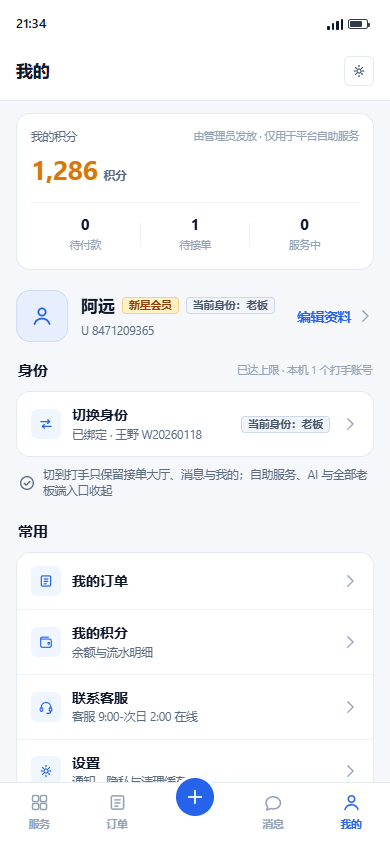
default
打开 HTML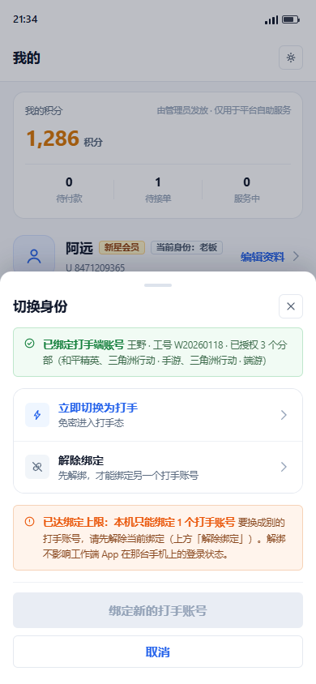
default
打开 HTML
toast midway
打开 HTML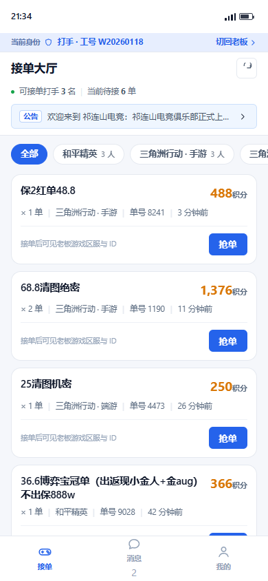
default empty noperm kicked
打开 HTML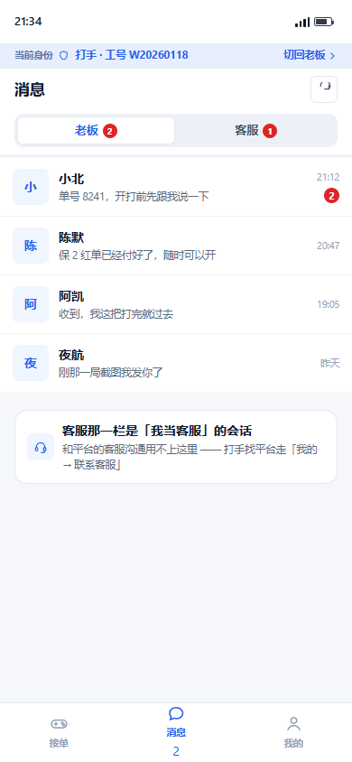
default cs
打开 HTML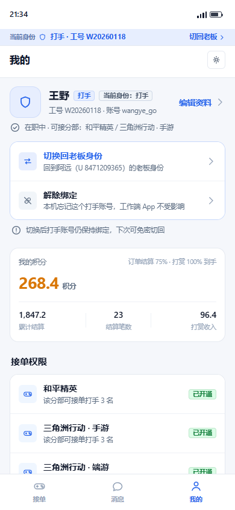
default unbind
打开 HTML
done after
打开 HTML13.2 身份显示的两种表达：对比与推荐
| 对比维度 | 表达一 · 顶部两格切换器（C 套做法） | 表达二 · 28dp 身份细带（A+ 采纳） |
|---|---|---|
| 形态 | 顶部两格切换器（C 套做法）：两枚等宽胶囊「老板 / 打手」横排，选中格实色主色底。 高度 40dp，圆角 10，格间距 8dp；选中 primary 底 + 白字 13.5sp w700；未选中 bgCard 底 + textSecondary 字 + 发丝线描边。 | 28dp 身份细带（A+ 采纳）：一行文字 + 右侧一个动作。 高度 28dp，圆角 0（通栏）， primarySoft 实色底 + 1px 发丝线（AppColors.divider）下描边，无阴影无渐变。 |
| 什么身份能放 | 语义上"两个身份并列"，因此两个身份都该有。老板态「我的」放得下（一屏只有身份 + 积分 + 常用），但老板端服务页 / 订单页 / 消息页放不下：这三屏顶部已有页头，再插一个 40dp 切换器＝每屏多一块常驻控件。 | 只放打手态。老板态是"主 App 本体"，用户的身份默认认知就是老板，不需要常驻提示；打手态是"少数派形态"，才需要提示。 |
| 底部导航的关系 | C 套要求两态共用同一套底栏几何、按身份改导航项（5 项 ↔ 3 项）。这正是 A 套已经否掉的地方：A 套打手态底栏只有 3 项且 无凸起位，老板态 5 项含凸起 —— 两种身份的底栏形态差异已经极大（项目数 3 vs 5、有无凸起、有无 AI 分支）。 | A+ 不动底栏。正因为底栏差异已经足够大，身份带不需要承担"区分身份"的重任，它只承担两件事：① 说清"我现在是打手、工号是多少"（底栏只能说"这里有接单/消息/我的"，说不出工号）；② 给一个位置固定的切回出口（底栏故意不提供，避免误点丢页状态）。 |
| 对打手态干净度 | 切换器是"两个身份"的视觉声明，会把老板身份带进打手态界面（一个写着"老板"的胶囊常驻在大厅顶部）——与"打手态不得出现任何老板端元素"存在张力，只能靠置灰/隐藏未选中格来缓解，规则容易破。 | 细带只写打手自己的信息（角色 + 工号），右侧动作是"离开"而不是"另一个身份"。打手态里不出现「老板」二字 → 黑名单与结构断言天然通过。 |
| 老板态的代价 | 「我的」页多一个常驻板块（约 92dp：卡片 13+13 内边距 + 标题行 + 40dp 切换器 + 分隔 + 事实行），把「常用」往下推；对纯老板用户是无效信息。 | 零新增板块：身份信息挂在已有的「身份」分组行内（一枚 17dp 标签），分组上移到资料头下方后仍在首屏，没有把任何内容挤出屏幕。 |
| 切换回老板的成本 | 顶部一格，随时一键（最低）。 | 打手态三屏的细带右侧都有「切回老板 ›」，同样随时一键（与 C 齐平）；差别只在细带是 28dp、切换器是 40dp。 |
| 结论 | 不采纳 作为全局控件。它在老板端多屏放不下，且会把老板身份带进打手态。 | 采纳 作为打手态常驻标识；老板态用「我的」页分组内的标签表达（同一事实、同一处入口，不另造第二入口）。 |
推荐：表达二（28dp 身份细带），并且只在打手态常驻。四条依据，按权重排序：
① 两种身份的视觉差异已经足够大，身份带不需要再"区分身份"。A 套打手态底栏是 3 项、无凸起位；老板态是 5 项、中间凸起＋（AI 分支）。项目数、有无凸起、有无 AI 三类差异同时存在， 用户切过去一眼就知道"我不在原来的界面了"。此时身份带要解决的只剩两件底栏说不了的事：工号是多少（底栏没有位置显示工号）与从哪儿切回去（底栏故意不放切换入口，避免误点丢页状态）。
② 切换器在老板端"放不下"。C 的切换器只有「我的」页放得下；老板端服务页 / 订单页 / 消息页顶部已有页头与筛选，插一个 40dp 常驻控件就是在主路径上加噪音。而"当前身份"这个信息在老板态本是默认认知（用户拿这个 App 就是来下单的），不值得每屏付 40dp。
③ 细带能守住"打手态零老板端元素"。切换器是"两个身份并列"的视觉声明，必然在打手态界面里写出「老板」二字；细带只写打手自己的角色与工号，右侧动作是"离开"（切回老板）而不是"另一个身份"。 这让核验器的黑名单断言与结构断言天然通过，不需要额外豁免。
④ 老板态的代价为零。表达一要在「我的」页加约 92dp 的常驻板块（纯老板用户眼中的无效信息）；表达二把身份信息挂进已有的「身份」分组行（一枚 17dp 标签），不新增任何板块。
代价（如实说明）：细带 28dp 常驻，打手态首屏订单卡从 6 张降到 5 张（约 3.3% 视口高度）；且细带比切换器窄——它是"标识"不是"开关"，切换动作在「我的」页与细带右侧文字上，语义上少了一点"并列"的暗示。这两点已由 A+3 出图量化。
推荐方案与底部导航 / 凸起位的处理（逐条）
| 问题 | 处理 | 理由 |
|---|---|---|
| 细带放在哪一层？ | 页头（AppPageHeader）下方、滚动内容之上，不随内容滚动；顶边距 0。 | 若贴在状态栏下方，视觉上会像系统级 SIM 卡条，与状态栏抢"系统区"；放在页头之下则与标题构成一个紧凑头部块（页头 + 细带 = 91dp），三屏位置一致、切 tab 不跳位。 |
| 身份带与页面标题是否抢位？ | 不抢：标题 17sp w700 在 34dp 标题行内，细带 28dp 在其下方独立分层；细带内文字最大 11.5sp，与标题形成明确的级别差。 | 两处字号差 5.5sp、字重同为粗体但字号小一档，且细带用浅底实色（primarySoft）与页头白底分层，不争视觉焦点。 |
| 细带要不要与底部导航呼应？ | 不呼应，刻意不对称：细带在顶部讲"我是谁"，底栏在底部讲"能去哪"，两者是不同层级的控件，几何上也不同（28 通栏 vs 62 分项）。 | 身份带不是导航：把它做成"第 4 个 tab"或与底栏同款胶囊，会诱导用户点它当导航用。A+ 的取舍是"顶部标识 + 底部导航"，各管一件事。 |
| 打手态的凸起位怎么处理？ | 整体不渲染（不留空位、不置灰、不换成别的圆形按钮）。底栏总高仍为 62dp（= 老板态 62dp）。 | 老板态的 62dp 是"含凸起＋"的高度（凸起按钮 44dp，margin-top -15dp 溢出到内容区）。打手态没有凸起，因此项内需要 62dp 的可点击高度来保持切换身份时底栏不跳高（core 的 AppPlainBottomNav 需新增 height 参数）。 |
| 老板态为什么不放身份带？ | 老板态只有「我的」页显示「当前身份：老板」标签，其余四屏（服务 / 订单 / 消息 / 我的）一律不显示。 | 老板是默认身份：每屏顶一条"我是老板"等于每屏一条无信息量的横幅（docs/21 禁"每条信息配彩色小标签"的同理）。真正需要提示的场景（被顶下线、切换失败）由既有错误态承担。 |
| 打手态三屏的细带是否完全一致？ | 完全一致（同高、同色、同文案、同位置），唯一例外是 kicked（被别的设备顶下线）：同位置换红系 + 文案加「（已暂停）」+ 右侧动作变「重新登录」。 | 位置不动是硬要求：被顶下线本身已经让用户困惑，再把标识位置挪走会加剧"我现在是什么状态"的不确定。 |
13.3 实施要点清单（客户端任务直接采用）
表内每一项都写明元素 / 位置 / 尺寸 / 颜色 token / 字号字重 / 间距；标注「需新增」的即当前 core 里没有、需要一并补上的 token 或参数。
颜色 token 全部走 AppColors.*（app_colors.dart），圆角档位走 AppAuthRadius（4 / 6 / 10 / 14）与 AppCard.radius = 16，动效走 Motion.*（app_motion.dart）。
| 编号 | 元素 | 放在哪（位置） | 尺寸 / 高度 | 颜色 token | 字号 · 字重 · 间距 | 组件 / token 复用情况 | |
|---|---|---|---|---|---|---|---|
| ID-A | 身份细带（打手态常驻） | 打手态三屏：接单大厅 / 消息 / 我的。位置 = 页头（AppPageHeader）正下方、滚动内容之上，不随内容滚动；顶边距 0（紧贴页头下沿）。 | 高度 28dp；通栏（左右不缩进）；无圆角（0）；不设阴影（docs/21：阴影只给弹层）。 | 底色 AppColors.primarySoft（#E7EEFE）；底部 1px 发丝线 AppColors.divider（#E2E8F0）。 | 左侧小标签「当前身份」10.5sp w600；身份串「打手 · 工号 W20260118」11.5sp w700；两段都用 AppColors.primary。 | 左右内边距 16（= AppColors 体系里的页面 --pad）；组内间距 6dp（标签→盾牌图标→身份串）；图标与文字底对齐居中（CrossAxisAlignment.center）。 | AppColors.primarySoft / AppColors.primary / AppColors.divider / AppIcon.shield（13dp）均已存在。需新增：无（若想让左侧标签再淡一档，可新增 AppColors.identityLabel = Color(0xFF5A76AE)，不加则用 AppColors.primary 亦可）。 |
| ID-B | 细带右侧「切回老板」入口 | 细带右端（Spacer() 之后）：文字「切回老板」+ 12dp 右箭头，InkWell 热区高度 28dp（整条带高）、左右各扩展 8dp 内边距（保证 ≥ 44dp 宽的可点区域）。 | 文字 11.5sp w700，颜色 AppColors.primary；箭头 12dp 同色。 | 与身份串之间用 Expanded 占位，不允许把身份串压到省略号（工号必须完整可见）。 | 点击行为：切回老板 → 走同一套切换流程（Toast + 骨架）；在「我的」页时该动作与页内「切换回老板身份」行等价。 | AppIcon.chevronRight（或既有 AppIcon.chevron，12dp）。 | |
| ID-C | 打手态页头去掉「打手态」标签 | 打手态三屏的页头右侧只保留刷新按钮；原工作端的「打手态」AppTag 删除。 | 删除后页头高度不变（34dp 标题行 + 9dp 下内边距）；细带补位后，页头 + 细带合计 91dp（原页头 63dp，净增 28dp）。 | 理由：同一事实（"我是打手"）不得出现在两个位置（docs/21「不存在的东西不出现 / 不重复」）。 | — | 无新增；删除 AppTag('打手态') 一处。 | |
| ID-D | 老板态「我的」页 · 身份分组 | 位置：资料头正下方（上间距 18dp），在积分卡之前；组内顺序 = 组标题行 → 单行入口「切换身份」→ 事实说明行。 | 组标题 15sp w700（AppSectionHeader）；右侧小字 10.5sp AppColors.textTertiary；标题行与卡片间距 10dp（组内紧）；本组与上一块间距 18dp、与下一块 22dp（组间松）。 | 入口行：上下内边距 13dp、左右 14dp；左侧图标容器 30×30、圆角 6、底 AppColors.ice、图标 16dp AppColors.primary；主文案「切换身份」14sp w600 AppColors.textPrimary；副文案 11.5sp AppColors.mutedText、上边距 2dp。 | 行尾「当前身份：老板」标签：高 17dp、左右内边距 6dp、圆角 4、10.5sp w700、字色 AppColors.textSecondary、底 #F1F5F9、描边 1px #CFD8E6。需新增 token：AppTag.identity()（或 AppColors.tagNeutralBg = Color(0xFFF1F5F9) + AppColors.tagNeutralBorder = Color(0xFFCFD8E6)）。 | AppSectionHeader / AppCard（radius 16、padding 0 时行内自绘） / AppIcon.swap / AppColors.ice / AppColors.primary / AppColors.mutedText / AppColors.textTertiary 均已存在。 | |
| ID-E | 老板态资料头徽标 | 昵称行内、会员标签右侧，行内间距 7dp。 | 与 ID-D 的行尾标签同一枚（17dp / r4 / 10.5sp w700）。 | 文案固定为「当前身份：老板」（含中文全角冒号，客户端请勿改成半角或加空格）。 | 只读标签，不可点（切换入口只有 ID-D 一处）。 | 同 ID-D。 | |
| ID-F | 打手态底部导航 | 项数与顺序：接单 · 消息 · 我的（依次，等宽 Expanded）。不渲染凸起位、不留空位、不置灰。 | 总高 62dp（与老板态底栏一致，切换身份时底栏不跳高）；项内图标 21dp + 间距 4dp + 标签 10.5sp w600。 | 选中 AppColors.primary；未选中 AppColors.textTertiary（#94A3B8）；顶部 1px 发丝线 AppColors.divider；底 AppColors.bgCard。 | 消息未读徽标：AppColors.error 底 + 白字 10sp w700、minWidth 17 / height 17 / 圆角 9、与标签上间距 5dp。 | core 既有 AppPlainBottomNav 直接复用（打手态传 3 项）；需新增 1 个参数 height（默认 56，打手态传 62 与老板态 AppBottomNav 对齐）。 | |
| MSG-A | 打手态消息页 · 两段 | 顺序固定：老板 → 客服（AppSegmented，等宽两格）。两段都是"我作为打手"的会话，不出现第三段。 | 分段控件外容器高 37dp（内含 3dp 内边距 + 31dp 内项）、圆角 10、槽底 #EDF1F7、项间距 3dp。 | 选中项：底 AppColors.bgCard + 字 AppColors.primary + 1px 发丝线描边、13sp w600；未选中：透明底 + AppColors.textSecondary。未读徽标同 ID-F。 | 段标题下方到列表首行间距 10dp；会话行沿用既有工作端读法（头像 40、主行 14sp w600、末条消息 11.5sp AppColors.mutedText、时间 10.5sp AppColors.textTertiary）。 | AppSegmented（选中态样式补 primary 字色 + 发丝线，若与既有实现不一致则以本稿为准）。 | |
| MSG-B | 打手态消息页 · 空态文案 | 老板段无会话：标题「还没有老板来找你」，说明「抢到第一单后，下单的老板会自动出现在这里；抢单或派单成功时服务端会自动建会话」。 | 客服段未授权或无会话：标题「你还没有客服会话」，说明「客服权限由管理员单独授予，与接单权限互相独立；开通后老板的咨询会出现在这里」。 | 整块居中（AppEmpty），顶部内边距 64dp、左右 30dp。 | 图标 44×44 圆角 14 白底 + 发丝线 + AppColors.textTertiary 图标 21dp；标题 13.5sp w600 AppColors.textSecondary；说明 11.5sp AppColors.mutedText 行高 1.55。 | AppEmpty(icon:, text:, action:, onAction:) 已支持标题 + 说明 + 动作；两段空态各传一条。 | |
| MY-A | 打手态「我的」页 · 工号展示 | 资料头：头像 52×52 圆角 14（AppColors.primarySoft 底 + 盾牌图标）；昵称 17sp w700；昵称行右侧 AppTag('打手', color: primary)；下一行副文案「工号 W20260118 · 账号 wangye_go」。 | 副文案 11.5sp AppColors.mutedText、上边距 4dp。 | 在职与分部事实行：11.5sp AppColors.mutedText，图标 AppIcon.check 13dp AppColors.success，上边距 2dp、下边距 14dp。 | 工号完整展示，不做掩码（这是打手本人的账号，不是敏感数据）；不可点击编辑（打手资料只读，见待拍板第 9 条）。 | AppAvatar / AppTag / AppIcon.shield 已存在。 | |
| MY-B | 打手态「我的」页 · 切换回老板 | 位置：资料头与事实行之后、收益卡之前（首屏必见）。形式：单行卡片，主色描边 #C7D8FB。 | 行内边距上下 13dp / 左右 14dp；图标容器 30×30 r6、底 AppColors.primarySoft、图标 16dp AppColors.primary。 | 主文案「切换回老板身份」14sp w600 且用 AppColors.primary（与普通行的 textPrimary 区分）；副文案「回到阿远（U 8471209365）的老板身份」11.5sp AppColors.mutedText、上边距 2dp；行尾 14dp 右箭头 AppColors.textTertiary。 | 卡片下方紧跟事实行「切换后打手账号仍保持绑定，下次可免密切回」（11.5sp mutedText，上边距 8dp）。 | AppCard(border:) 支持自定义描边；AppIcon.swap 已存在。 | |
| MY-C | 打手态「我的」页 · 解绑入口 + 二次确认 | 入口：与 MY-B 同一张卡片的第二行（两行一卡＝身份管理全部动作），不被次分割线以外的东西隔开。图标底 #F1F5F9、图标色 AppColors.textTertiary，主文案「解除绑定」用普通字重（不用红色，破坏性由弹层承担）。 | 弹层：AppBottomSheet 圆角 14/14/0/0、左右内边距 16、上内边距 15；抓握条 34×4 #DDE3EC。 | 确认按钮文案写全后果：「解除绑定并回到老板身份」，AppColors.error 实底白字、高 44dp、圆角 6；取消键高 40dp 描边款。 | 弹层内必须先说明"不影响两件事"：① 工作端 App 在那台手机的登录状态不变；② 打手态的订单/收益/私聊记录都还在。 | AppColors.error / AppButton；弹层用 core 既有底部弹层容器（若为 showModalBottomSheet，shape 传 RoundedRectangleBorder(borderRadius: BorderRadius.vertical(top: Radius.circular(14)))）。 | |
| SW-A | 切换身份弹层 | 从「我的 → 身份 → 切换身份」行唤起；覆盖全屏，底部弹层（showModalBottomSheet(isScrollControlled: true)）。 | 左右内边距 16dp、上内边距 15dp；顶部圆角 14；maxHeight = 760（AppColors 体系里的 760dp 上限，超出时内容区滚动、按钮区固定）。 | 遮罩 Color(0x6B0F172A)（= rgba(15,23,42,.42)），唯一允许阴影的地方：BoxShadow(color: Color(0x2E0F172A), blurRadius: 30, offset: Offset(0,-10))。 | 标题「切换身份」17sp w700；关闭按钮 30×30、圆角 6、1px 发丝线描边。内容区纵向间距 14dp；按钮区与内容区之间 1px 发丝线 + 上内边距 12dp、下内边距 20dp。 | 输入框直接复用登录页那套：AppAuthField（高 46dp、圆角 AppAuthRadius.control=10、底 AppAuthColors.fieldFill #FAFBFD、描边 AppAuthColors.fieldBorder #E5E9F0、label 12sp w600 AppColors.textTertiary、输入字 15sp、图标 17dp）；错误态 AppAuthColors.errorSoft 底 + AppColors.error 描边。主按钮 AppAuthButton（高 48、圆角 6、15.5sp）；次要按钮高 40dp。 | |
| SW-B | 7 类错误态（文案 + 出现位置） | ① 未绑定（默认）：两个输入框 + 主按钮「绑定并切换为打手」。 ② 账密错误（401）：主按钮文案转「重新绑定」，两个输入框转错误态，下方红字错误行「账号或密码错误，请重新输入。连续 5 次会锁定 1 分钟。」 ③ 填了老板账号（403「账号角色不符」）：橙色提示条（不是输入框红字）「这个账号是老板账号，不是打手账号」+ 处置说明；主按钮置灰，副按钮「联系客服」。 ④ 账号已停用（403 ACCOUNT_BANNED）：红色提示条「该打手账号已被停用」+ 工号与停用时间；主按钮置灰，副按钮「联系管理员」。⑤ 别处已登录（单设备冲突）：橙色事前告知条 + 账号信息卡（账号 / 工号·昵称 / 可接分部）+ 主按钮「仍然绑定，让那台设备下线」、副按钮「先不绑定」。 ⑥ 无任何接单权限：橙色提示条「绑定成功，但这个打手还没有任何分部的接单权限」+「已授权分部：暂无」；主按钮置灰、副按钮「留在老板态」。 ⑦ 已绑定：不请求账密，显示绑定卡（ AppIcon.ok 绿）+ 两行动作「立即切换为打手」「解除绑定」；主按钮「切换为打手」、副按钮「取消」。 | 默认态内容顺序：两个身份单选项 → 一行说明（11.5sp mutedText）→ 账号字段 → 密码字段。 | 身份单选项（.opt）几何：内边距 13/14、圆角 14、间距 11dp、19dp 单选圆钮；选中态底 AppColors.primarySoft + 描边 AppColors.primary。只有两个身份（老板 / 打手）。 | 提示条（.banner）：内边距 10/12、圆角 6、图标 15dp、标题 12.5sp w600、说明 11.5sp；四色 = 红（错误）/ 橙（注意但没坏）/ 蓝（信息）/ 绿（成功）。全部无阴影。 | 错误码与文案一一对应关系见第 6 节错误态矩阵；AppTag / AppCard / AppAuthField / AppAuthButton 全部复用。 | |
| SW-C | 绑定上限已满 | 出现位置：切换身份弹层的第 7 态（已绑定）底部，不单独成页。橙色提示条「已达绑定上限：本机只能绑定 1 个打手账号」+ 处置句「要换成别的打手账号，请先解除当前绑定」。 | 同时把主按钮改成置灰的「绑定新的打手账号」（把用户推向唯一可行动作）；「解除绑定」行副文案改为「先解绑，才能绑定另一个打手账号」。 | 老板态「我的」页分组右侧小字同步为「已达上限 · 本机 1 个打手账号」（同一事实两处一致，避免点进去才发现不能加）。 | 上限口径：本机 1 个打手账号（= 唯一键 (user_id, worker_user_id, device_id) 下的最简实现）。若改多绑定，本清单的 ID-D / SW-A / SW-C 三处形态都要改（入口行 → 身份列表、弹层 → 列表 + 添加）。 | AppColors.warning；上限值建议走 system_setting（键 identity_bind_limit，默认 1）以便后续调整而不发版。 | |
| TR-A | 切换中过渡提示 | 形式：顶部 Toast（不是通栏细带）。位置 = 安全区下沿 + 60dp，左右各缩进 24dp，水平居中。 | 文案：切到打手「已切换到打手身份」/ 切回老板「已切换到老板身份」/ 解绑「已解绑打手账号，已回到老板身份」。 | 时长 2000ms 自动消失；内容 = 图标 17dp + 间距 8dp + 文字 13sp w700 白字；内边距 16/11、圆角 14。 | 底色用品牌色实底（AppColors.primary）—— 注意：core 既有 AppToast 内部用的是 primary → 深 12% 的极小面积渐变（品牌化提示，2 秒生命周期，非主视觉面积）；此处的静态示意按实色 primary 画，实施时直接调用 AppToast.info()，不要新写一个 Toast。 | AppToast.info(context, '已切换到打手身份') 已存在（app_toast.dart），零新增。 | |
| TR-B | 动效参数（按 docs/15 / Material Motion） | Toast 入场：260ms，曲线 Cubic(0.2, 0, 0, 1)（emphasized decelerate），淡入 + 上浮 25% 高度 + 从 0.94 缩放；出场为反向 200ms 淡出。 | 身份切换时的骨架替换：淡入 260ms（Motion.itemEnter 同档），不做横向滑动（避免"换 App"的错觉）。 | 细带出现/消失：180ms 淡入 + 高度从 0 到 28 的 SizeTransition，曲线 Motion.emphasized；只在切换身份时发生一次，页面内 tab 切换不重播。 | 底栏项数变化（5 ↔ 3）：不做逐项动画，整块 150ms 交叉淡化（项目数与位置同时变化，逐项动画会显得乱）。 | 全部取 Motion.* 既有档位（app_motion.dart）：pageForward 300 / pageReverse 250 / itemEnter 260 / containerTransform 320 / emphasized / standard，无需新增常量。 | |
| TR-C | 切换的原子顺序（必须按此顺序，否则会串味） | ① 断旧 WS（RealtimeClient.dispose()）→ ② 清 ApiCache → ③ 切 AuthStore.activeIdentity + token 槽 → ④ 重建 WS → ⑤ 重建页面栈（按身份真正不挂载另一态的页面）→ ⑥ 显示 Toast。 | 顺序错位的后果：先建新 WS 再断旧的 → 两条连接同时收未读，红点串味；先切 token 不清缓存 → 打手态首屏显示老板态的缓存数据。 | 期间显示目标身份的骨架（midway 态），绝不显示老板态内容。 | 失败处理：③ 之前任何一步失败 → 留在原身份 + AppToast.error；③ 之后失败 → 回滚 token 槽并重建旧身份连接。 | 详见第 8 节改动清单 C1/C2/C4 与第 9 节风险 R3。 | |
| OS-A | 可抄的开源范式（许可与来源） | 底部弹层 + 单选身份卡：Material 3 showModalBottomSheet + RadioListTile 的组合（Flutter SDK 自带，BSD-3）—— 本稿 SW-A/SW-B 即此范式，无需第三方包。 | 品牌化 Toast：项目已按 Material Motion 规范自研（app_toast.dart），不需要 fluttertoast/another_flushbar；若要更花的入场，可参考 flutter_animate（MIT）的 fadeIn + slideY + scale 链式写法，但不引入依赖，用内置 FadeTransition/SlideTransition/ScaleTransition 等价实现（BSD-3）。 | 工作台列表（大厅订单卡）：flutter_miuix（Apache-2.0，项目已依赖）的列表项与分段控件样式可参考；flutter_chat_ui（MIT）的会话行/未读徽标排版可参考。 | 细带/身份徽章：Material 3 Badge（SDK 自带）与 ListTile.dense 的密度参数是本细带 28dp 取值的直接依据（M3 的 dense 行高 48dp 太高，故自绘 28dp）。 | 许可红线：以上均为 MIT / Apache-2.0 / BSD-3，可直接照抄实现；抄的时候只抄布局、密度、动效曲线与状态机，不抄品牌资产、插画、吉祥物、图标集与文案（docs/21 第 6 条 + CLAUDE.md「禁止复制参考 App 的图片、插画、吉祥物、文案与独特装饰」）。GPL/AGPL 项目只可参考思路，不得引入依赖。 |
实施顺序建议（先骨架后细节，每步可独立验收）
第 1 步（0.5 天）：core 加两个东西——AppIdentityBar（ID-A / ID-B）与 AppPlainBottomNav.height 参数（ID-F）。此时打手态三屏即可挂细带，不依赖任何服务端改动，可直接跑核验器看正向断言。
第 2 步（0.5 天）：老板态「我的」页身份分组（ID-D / ID-E，含分组上移）+ 打手态页头删标签（ID-C）+ 空态文案（MSG-B）。
第 3 步（1 天）：切换弹层按 AppAuthField/AppAuthButton 复用（SW-A）+ 7 类错误态（SW-B）+ 绑定上限态（SW-C）+ Toast（TR-A）+ 原子顺序（TR-C）。
第 4 步（0.5 天）：动效接线（TR-B）+ 双身份下细带/底栏不跳位的真机复核（重点看 5 项 ↔ 3 项切换时底部导航高度是否一致）。
验收口径：node scripts/tmp/merge-identity-shot.mjs 全绿（含 A+ 的 4 类身份正向断言 + 打手态黑名单 0 命中 + 细带高度 28dp + 细带在页头之上 + 细带实色无阴影）。
13.4 与 docs/21《反 AI 味设计规范》逐条对照（A+ 新增部分）
| docs/21 条目 | A+ 的落点 | 核验方式 |
|---|---|---|
| 禁渐变做主视觉 | 细带/标签/Toast 全部实色（细带 primarySoft、标签 #F1F5F9、Toast primary） | 核验器逐屏断言 gradient 面积 = 0 |
| 阴影只给弹层 | 细带、身份标签、底栏、Toast（静态示意）均无阴影；唯一投影在 .sheet | 核验器断言「非弹层元素 box-shadow = none」 |
| 圆角分档 4 / 6 / 10 / 14 | 身份标签 4、图标容器 6、切换器圆角 10（对比稿）、Toast 与卡片 14 | 核验器抽查细带圆角 = 0（通栏）、标签高 17dp |
| 不堆彩色胶囊 | 打手态细带只有一条；页头原「打手态」绿标已删除，全屏彩色标签数从 2 降到 1 | 黑名单 + 结构断言；人工复核每屏彩色标签 ≤ 1 |
| 无 emoji | 全部图标为内联线性 SVG（stroke 1.8）/ Material outlined | 核验器正则扫 emoji（含 U+1F300–1FAFF 等 5 段区间） |
| 列表用发丝线 | 细带底边 1px AppColors.divider；底栏顶边 1px；卡片沿用既有发丝线 | 核验器断言细带 border-bottom-width = 1px |
| 组内紧 8–10 / 组间松 20–24 | 身份分组：标题行→卡片 10dp（组内）；分组与资料头 18dp、与其他块 22dp（组间）。细带内部间距 6dp | 关键间距写进实施要点表；出图人工复核 |
| 假数据拟真 | 工号 W20260118、账号 wangye_go、老板昵称「阿远 / U 8471209365」、金额 1,286 / 268.4 / 1,847.2 / 96.4（非整数、长短不一） | 核验器断言真实分部名与真实公告原文出现 |
| 一屏只讲一件事 | 打手态每屏 = 一条身份细带 + 一个主任务（大厅/消息/我的）；细带不承载导航 | 结构断言：打手态底栏恰 3 项、无凸起、无浮标 |